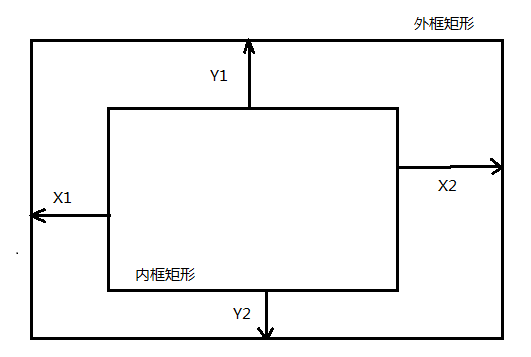
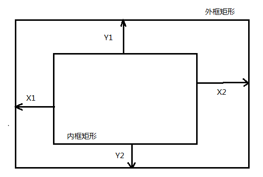
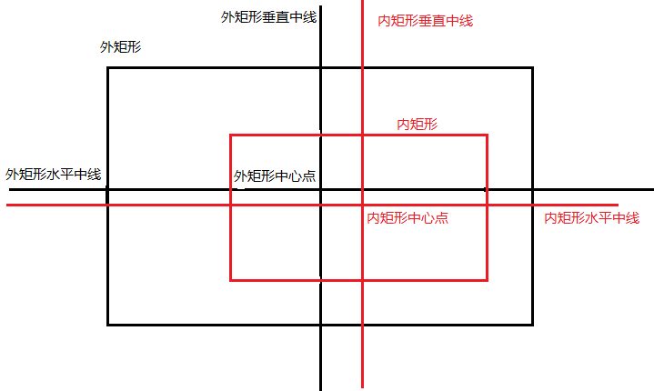
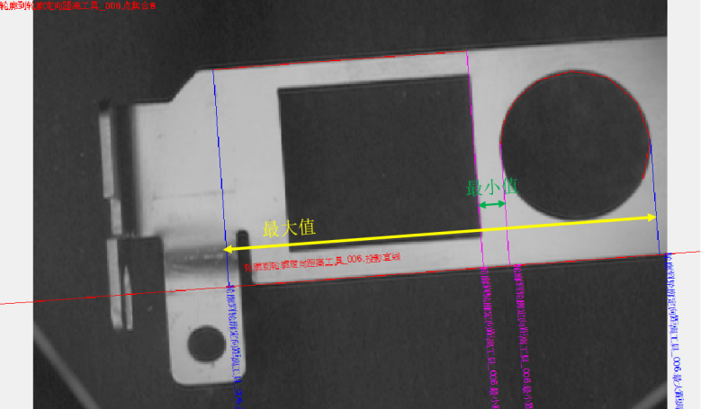
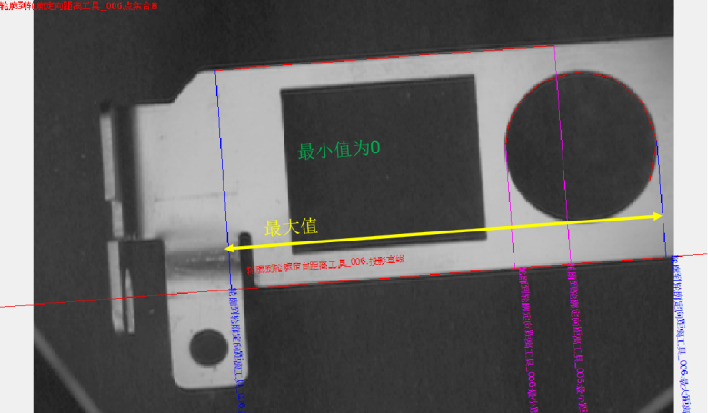
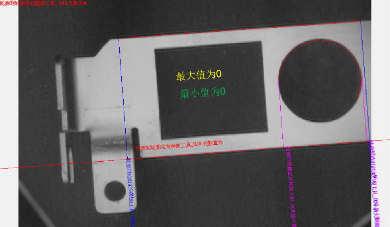
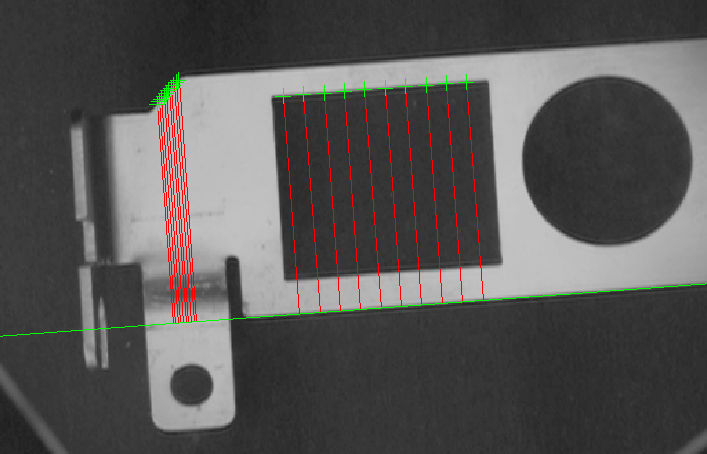

功能：根据矩形的上边距、下边距、左边距、右边距，计算出待检测物体外边框所组成的矩形与内边框所组成的矩形之间的同心度。

同心度
同心度Y=
同心度=
参数：
top：上边距Y1，浮点数类型。
right：右边距X2，浮点数类型。
bottom：下边距Y2，浮点数类型。
left：左边距X1，浮点数类型。
返回值：矩形同心度计算结果，RectConcentricityResult类型
2D距离测量主要是计算两个几何元素（点、线段、直线、圆与椭圆等）之间的距离，包括圆到圆距离、直线到圆距离、直线到椭圆距离、线段到圆距离工具、线段到椭圆距离、线段到线段距离、 线段到直线距离、点到圆距离、点到椭圆距离、点到线段距离、点到直线距离、点到点距离、矩形同心度计算、矩形中线同心度计算、轮廓到轮廓定向距离、多点到直线距离、点集距离计算。
其中多点到直线距离、点集距离计算的函数接口有像素当量参数，需要输入像素当量计算得到实际距离，如果像素当量等于1.0，则表示计算图像距离。
除了多点到直线距离、点集距离计算，其他距离计算函数结果的含义和单位取决于输入几何元素所在的坐标系。如果是图像坐标系下，结果是图像上的距离，单位是像素（实际距离需要乘以像素当量进行转换）；平台坐标系下，结果是实际距离。例如线段到线段距离计算，输入的线段如果是图像坐标系下的，计算结果就是图像距离；如果是转换到平台坐标系下的，就是实际距离；对于点到点距离计算，输入的点如果是图像坐标系下的，计算结果就是图像距离；输入的点如果是转换到平台坐标下的，就是实际距离。
对于和点相关的距离计算，计算结果DistanceResult中只有issucceed、distance和point1可用，point1表示参与距离计算的其他几何形状上计算距离的点坐标。对于两点之间距离计算，计算结果中只有只有issucceed、distance可用。
| 接口名称 | 接口描述 |
|---|---|
| DistanceCircle2Circle | 圆到圆之间的距离测量 |
| DistanceLine2Circle | 直线到圆之间的距离测量 |
| DistanceLine2Ellipse | 直线到椭圆之间的距离测量 |
| DistanceLineSeg2Circle | 线段到圆之间的距离测量 |
| DistanceLineSeg2Ellipse | 线段到椭圆之间的距离测量 |
| DistanceLineSeg2LineSeg | 线段到线段之间的距离测量 |
| DistanceLineSeg2Line | 线段到直线之间的距离测量 |
| DistancePoint2Circle | 点到圆之间的距离测量 |
| DistancePoint2Ellipse | 点到椭圆之间的距离测量 |
| DistancePoint2LineSeg | 点到线段之间的距离测量 |
| DistancePoint2Line | 点到直线之间的距离测量 |
| DistancePoint2Point | 两点之间的距离测量 |
| CalcRectConcentric | 矩形同心度计算 |
| CalcRectConcentricCL | 矩形中线同心度计算 |
| DistanceContour2Contour | 轮廓到轮廓的定向距离 |
| DistanceMulPoint2Line | 多点到直线的距离 |
| DistanceVctPoint2VctPoint | 两个点集对应点之间的距离测量 |
功能：计算圆到圆之间的距离。距离(DistanceResult.distance)的正负表示两个圆的关系，如果距离是正值表示两个圆无包含关系，如果距离是负值表示两个圆是包含关系，其中一个圆在另一个圆内。如果两个圆相交或相切，输出距离为0，不输出最小距离点的坐标；支持同心圆，输出距离是负值（两个圆半径的差值），输出结果中的两个点坐标都是nan。
参数：
circle1：圆1，scCircle类型。
circle2：圆2，scCircle类型。
返回值：距离计算结果，DistanceResult类型。
功能：计算直线到圆之间的距离，对于和圆相交或相切的直线，距离值为0。
参数：
line：直线，scLine类型。
circle：圆，scCircle类型。
返回值：距离计算结果，DistanceResult类型。
功能：计算直线到椭圆之间的距离，对于和椭圆相交或相切的直线，距离值为0。
参数：
line：直线，scLine类型。
ellipse：椭圆，scEllipse类型。
返回值：距离计算结果，DistanceResult类型。
功能：计算线段到圆之间的距离。距离(DistanceResult.distance)的正负表示线段和圆的位置关系，如果距离是正值表示线段在圆外，如果距离是负值表示线段在圆内。对于和圆相交的线段，距离值为0。
参数：
lineSeg：线段，scLineSeg类型。
circle：圆，scCircle类型。
返回值：距离计算结果，DistanceResult类型。
功能：计算线段到椭圆之间的距离。距离(DistanceResult.distance)的正负表示线段和椭圆的位置关系，如果距离是正值表示线段在椭圆外，如果距离是负值表示线段在椭圆内。对于和椭圆相交的线段，距离值为0。
参数：
lineSeg：线段，scLineSeg类型。
ellipse：椭圆，scEllipse类型。
返回值：距离计算结果，DistanceResult类型。
功能：计算线段到线段之间的距离，计算的是线段1的中点到线段2的距离。
参数：
lineSeg：线段1，scLineSeg类型。
lineSeg：线段2，scLineSeg类型。
返回值：距离计算结果，DistanceResult类型。
功能：计算线段到直线之间的距离，对于和直线相交的线段，距离始终是0。
参数：
lineSeg：线段，scLineSeg类型。
line：直线，scLine类型。
返回值：距离计算结果，DistanceResult类型。
功能：计算点到圆之间的距离。距离(DistanceResult.distance)的正负表示点和圆的位置关系，如果距离是正值表示点在圆外，如果距离是负值表示点在圆内。
参数：
point：点，sc2Vector类型。
circle：圆，scCircle类型。
返回值：距离计算结果，DistanceResult类型。
功能：计算点到椭圆之间的距离。距离(DistanceResult.distance)的正负表示点和椭圆的位置关系，如果距离是正值表示点在椭圆外，如果距离是负值表示点在椭圆内。
参数：
point：点，sc2Vector类型。
ellipse：椭圆，scEllipse类型。
返回值：距离计算结果，DistanceResult类型。
功能：计算点到线段之间的距离。
参数：
point：点，sc2Vector类型。
lineSeg：线段，scLineSeg类型。
返回值：距离计算结果，DistanceResult类型。
功能：计算点到直线之间的距离。
参数：
point：点，sc2Vector类型。
line：直线，scLine类型。
返回值：距离计算结果，DistanceResult类型。
功能：计算点到点之间的距离。
参数：
point：点1，sc2Vector类型。
point：点2，sc2Vector类型。
返回值：距离计算结果，DistanceResult类型
功能：根据矩形的上边距、下边距、左边距、右边距，计算出待检测物体外边框所组成的矩形与内边框所组成的矩形之间的同心度。

同心度
同心度Y=
同心度=
参数：
top：上边距Y1，浮点数类型。
right：右边距X2，浮点数类型。
bottom：下边距Y2，浮点数类型。
left：左边距X1，浮点数类型。
返回值：矩形同心度计算结果，RectConcentricityResult类型
功能：通过外矩形的四条边以及内矩形的四条边分别计算出外矩形的中心点以及内矩形的中心点，并通过这两个中心点计算出同心度。

X同心度=(外矩形同心度的X坐标) – (内矩形同心度的X坐标)；
Y同心度=（外矩形同心度的Y坐标）- （内矩形同心度的Y坐标）；
同心度=
参数：
outRectTopLineSeg：外矩形上边，scLineSeg类型。
outRectRightLineSeg：外矩形右边，scLineSeg类型。
outRectBottomLineSeg：外矩形下边，scLineSeg类型。
outRectLeftLineSeg：外矩形左边，scLineSeg类型。
innerRectTopLineSeg：内矩形上边，scLineSeg类型。
innerRectRightLineSeg：内矩形右边，scLineSeg类型。
innerRectBottomLineSeg：内矩形下边，scLineSeg类型。
innerRectLeftLineSeg：内矩形左边，scLineSeg类型。
返回值：矩形中线同心度计算结果，RectConcentricityCLResult类型
功能：用于计算轮廓到轮廓之间的距离，主要是与轮廓提取工具一起使用。
参数：
line：直线，scLine类型。
FeatureletChainSetA：轮廓A，scFeatureletChainSet类型，可以从轮廓提取工具的输出参数所有轮廓获得。
FeatureletChainSetB：轮廓B，scFeatureletChainSet类型，可以从轮廓提取工具的输出参数所有轮廓获得。
返回值：计算结果，PointsSet2PointsSetDisResult类型。
注意：
轮廓A与轮廓B在投影直线上的位置关系分为3种：轮廓A、B相互分离，无重叠；轮廓A、B相互重叠；轮廓A（B）包含于轮廓B（A），轮廓A为最上面的红线，轮廓B为右侧圆，如图3所示。

图3(a) 无重叠 
图3(b) 有重叠 
图3© 包含
图3 点集A、B位置关系示意图 对于图3(a)所示情况，正常计算距离的最大最小值；对于3(b)所示情况，正常计算最大值，规定最小值为0；对于3©所示情况，规定最大值、最小值均为0；

参数：
points：输入点集，vector\<sc2Vector>类型。
line：直线，scLine类型。
ratio：像素当量，浮点数类型。
返回值：计算结果，MulPoint2LineDisResult类型。
功能：点集距离计算工具的主要作用是计算图像上两个点集对应点之间的直线距离，并可以将图像上的距离换算成实际的距离，输入的两个点集长度必须相同，否则计算失败。
参数：
points1：点集1，vector\<sc2Vector>类型。
points2：点集2，vector\<sc2Vector>类型。
ratio：像素当量，浮点数类型。
返回值：距离计算结果，VctPoint2VctPointResult类型。
圆到圆之间的距离：参见“\Samples\脚本工具\脚本工具圆到圆距离.gvp”。
直线、线段相关的距离计算：参见“\Samples\脚本工具\脚本工具直线_线段距离.gvp”。
点相关的距离计算：参见“\Samples\脚本工具\脚本工具点距离.gvp”。
矩形相关同心度计算：参见“\Samples\脚本工具\脚本工具矩形同心度距离.gvp”。
轮廓到轮廓的定向距离计算：参见“\Samples\脚本工具\脚本工具轮廓到轮廓定向距离工具.gvp”。
多点到直线的距离计算：参见“\Samples\脚本工具\脚本工具多点到直线距离.gvp”。
点集距离计算：参见“\Samples\脚本工具\脚本工具点集距离计算.gvp”。